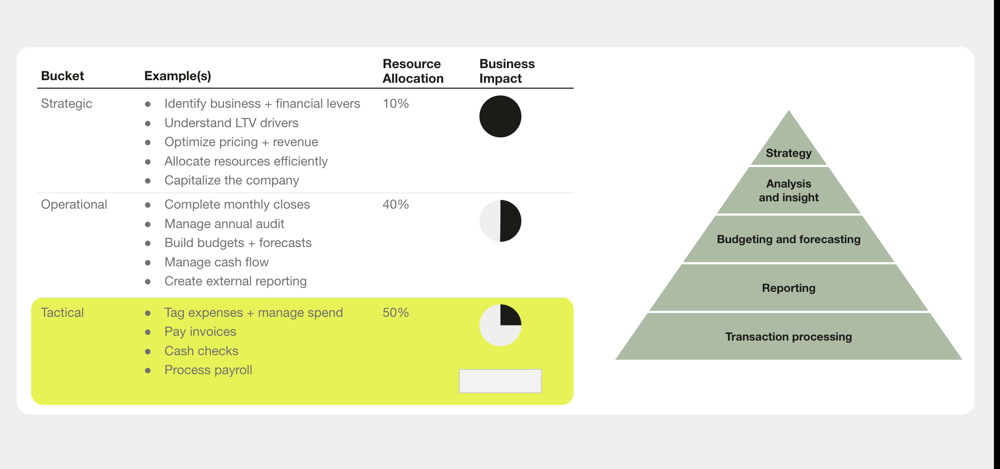

The Approach
A business that grows with you — from farm stand to national chain
Instead of teaching finance concepts in isolation, we built a narrative. Learners follow Alex, an entrepreneur who starts a farm stand and grows it into a national grocery chain. Each stage of Alex's business introduces the financial concepts that stage demands — so the complexity scales naturally with the story.
We started with the experts
We partnered with Dave Wieseneck, one of Ramp's experts in residence, and interviewed team leads across the organization. The goal: capture the knowledge that matters most from the people who know it best, then translate it into language anyone can follow.

Finance concepts through a growing business
At the farm stand, learners meet balance sheets and cash accounting. When Alex opens a grocery store, they encounter income statements, general ledgers, and double-entry accounting. By the time the business goes national, it's cash flow management, ERPs, and financial controls. No concept is abstract — every one is tied to a decision Alex has to make.
Customer scenarios built on a 5-act framework
For domain-specific knowledge, we designed a narrative framework that mirrors real customer journeys: Catalyst, Diagnosis, Exploration, Implementation, Resolution. Each scenario is driven by a different business trigger — a new CFO, rapid growth, a funding round — so learners practice navigating the situations they'll actually encounter with Ramp's customers.
AI-generated imagery that feels real
We used custom AI-generated images throughout — licensing photos of real humans, then editing backgrounds to fit each scenario. The result: characters that look like actual coworkers in actual work situations, not generic stock photography or obvious AI artifacts. Every image served the story.